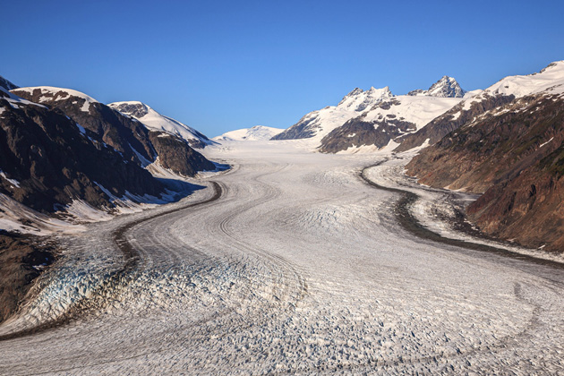

The Thing
Main Content

John Carpenter pays homage to one of his heroes, Howard Hawks, following Assault on Precinct 13 – which was inspired by Hawks’ Rio Bravo, though Carpenter returns more faithfully to the source story, John W Campbell’s 1938 novella Who Goes There? than the Hawks-produced The Thing From Another World in 1951.
Opening scenes of the Norwegians in a ‘copter mysteriously chasing and attempting to kill a husky dog were filmed on ice fields above Juneau, Alaska, but that’s not where the bulk of the movie was shot.
The ‘Antarctic’ research station, ‘Outpost 31’ or ‘US National Science Institute Station 4’, was a set built on Salmon Glacier, about 15 miles north of Stewart in northwest British Columbia. There are more details at Outpost31.com
There was no ice-house as there had been for the 1951 version, but the temperature of the stages at Universal Studios Hollywood in North Hollywood, were taken down to 40 degrees and the humidity increased to show up the characters’ breath.
The illusion was enhanced by mouthfuls of hot coffee and drags on cigarettes immediately before shooting while, of course, the temperature in LA outside was soaring.
Visit Info
Visit The Film Locations
British Columbia | Vancouver
Visit: British Columbia
Visit: Vancouver
Flights: Vancouver International Airport, 3211 Grant McConachie Way, Richmond, BC V7B 0A4 (tel: 604.207.7077)
Visit: Stewart
Visit: Salmon Glacier
Alaska
Visit: Alaska
Flights: Juneau International Airport
Visit: Juneau
California | Los Angeles
Visit: Los Angeles
Flights: Los Angeles International Airport (LAX), 1 World Way, Los Angeles, CA 90045 (tel: 424.646.5252)
Travelling around: Los Angeles Metro
Visit: Universal Studios Hollywood, 100 Universal City Plaza, Universal City, CA 91608 (tel: 800.864.8377)